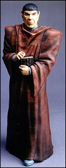

 Also shipping in September is GEOmetric's last kit from its Star Trek The Next Generation line... Ambassador Spock. Sculpted by one of GEO's favorites, John Dennett, Spock is 1/6 scale, all vinyl and retails for $49.99 (plus $4 s&h).
Also new from GEOmetric is Max Factory's Guyver Zoanoid vinyl kit. Based on the villain from Guyver 2 Dark Hero and sculpted by Yoshihito Kobayashi, the Zoanoid is 1/6 scale, all vinyl, and retails for $69.99 (plus $6 s&h). The kit will ship in September. We hope to have a picture of this kit soon, so keep checking back.
GEOmetric Design
accepts VISA and Mastercard.
The Gremlins in the Garage webzine is a production of Firefly Design. If you have any questions or comments please get in touch.
Copyright © 1994-1997 Firefly Design.